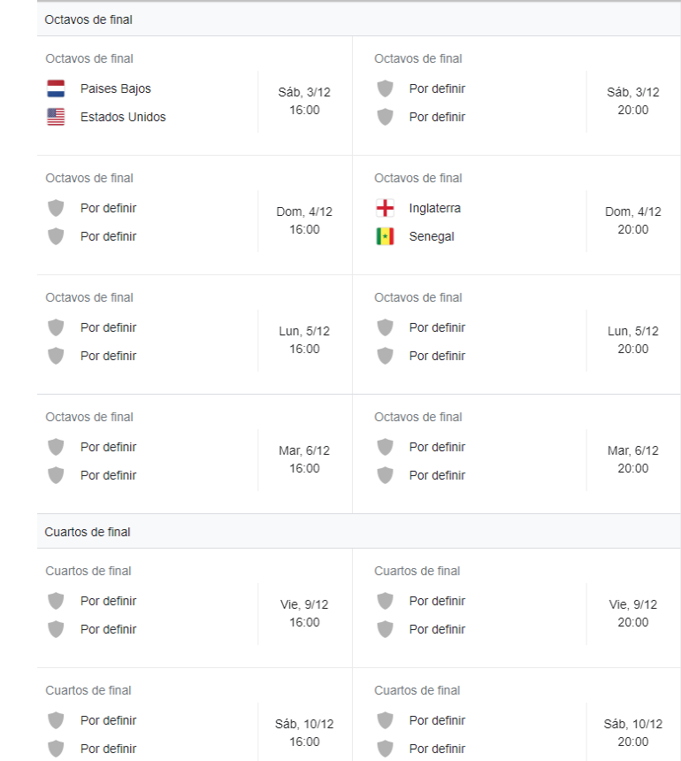
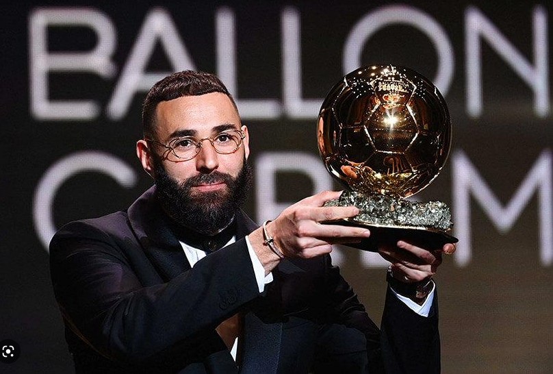
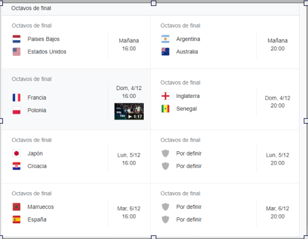
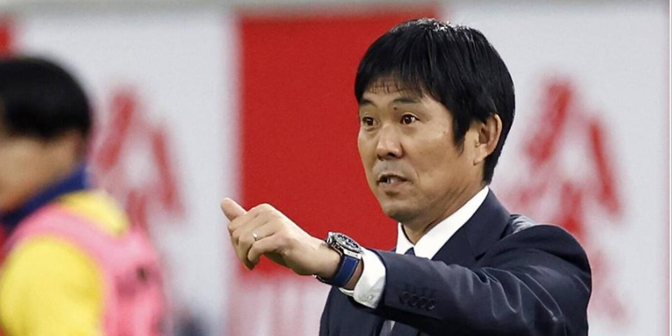

hola buenos dias esta es mi primera pagina web espero que os guste
esta pagina se basara en informacion de futbol
por ejemplo en las tablas de clasificacion de la copa del mundo

ultima noticia canelo alvarez busca pelea con leo messi por patear la camiseta de mexico

cristiano ronaldo deja el manchester united despues del mundial

hasta ahora pocas seleciones estan dentro de octavos del mundial por ahora solo estas estados unidos paises bajos senegal y inglaterra
karim benzema podra volver para jugar el mundial tras su lesion
karim benzema podra volver al mundial ya que el seleccionador de francia no lo a desconvocado de la seleccion francesa
el jugador frances volvera tras su lesion en el dedo tras los octavos de final del mundial el actual balon de oro podra jugar en qatar
ESPAÑA CASI SE QUEDA FUERA
el conjunto español estuvo durante 12 minutos fuera del gran mundial de qatar se salvaron gracias a alemania los cuales se eliminaron del mundial
el conjunto español quedo como segundo de grupo y se enfrentara ante marruecos en octavos de final

australia francia argentina polonia españa japon marruecos y croacia entran en octavos del mundial

hoy se cerrara los grupos del mundial para empezar mañana con los octavos
hoy se jugara el grupo g y el grupo h
el entrenador de japon apunto todas las tacticas de españa y en el descanso las ejecuto el conjunto japones a la perfecion
